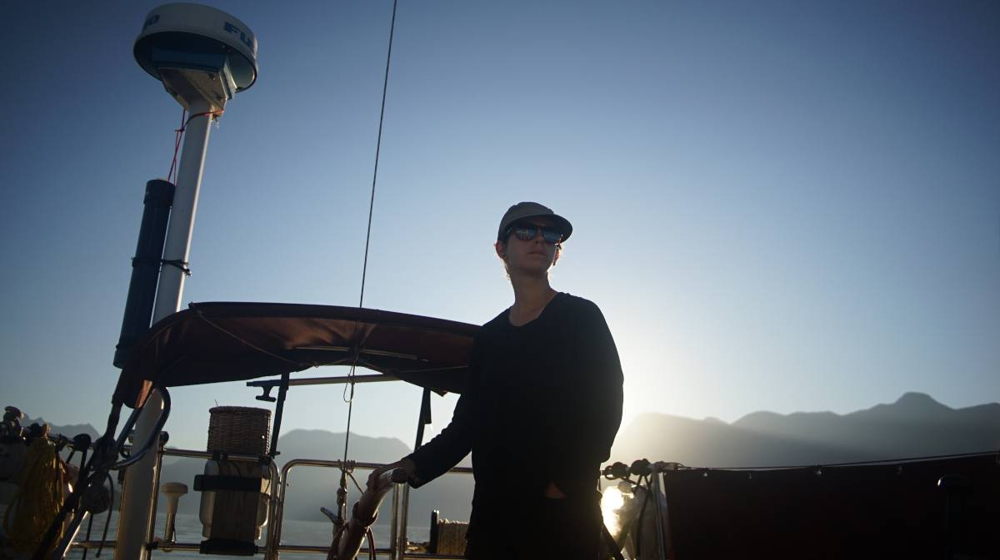
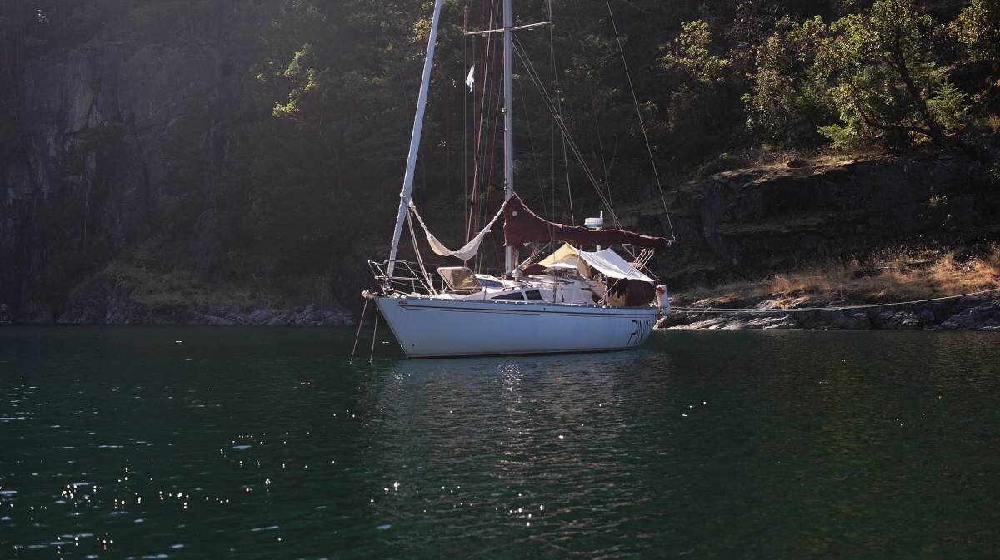
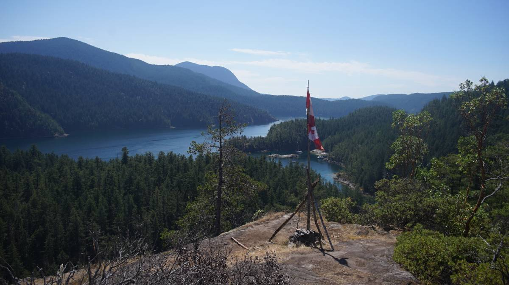
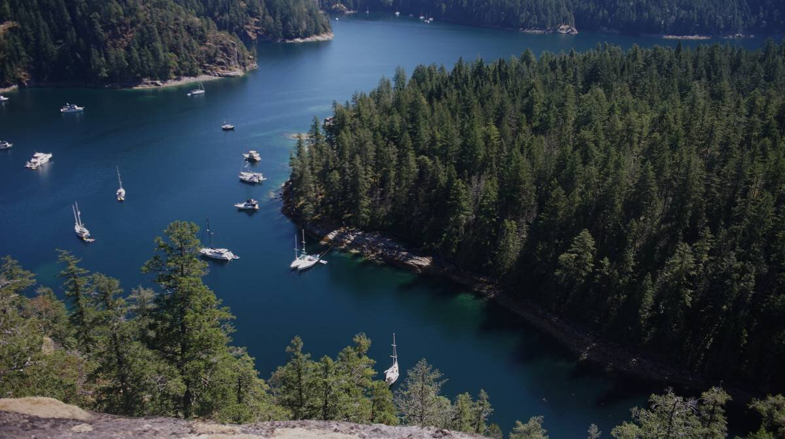
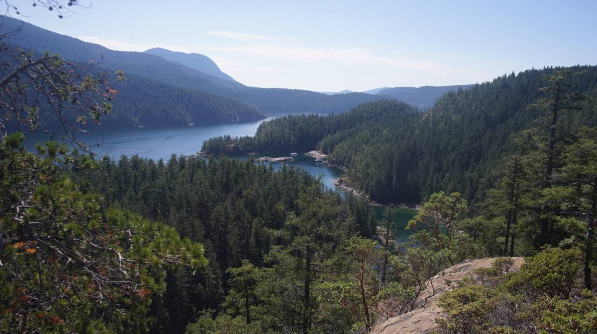
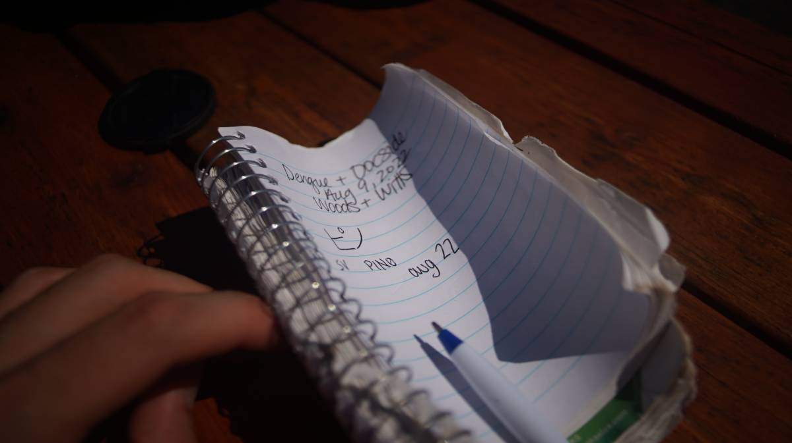
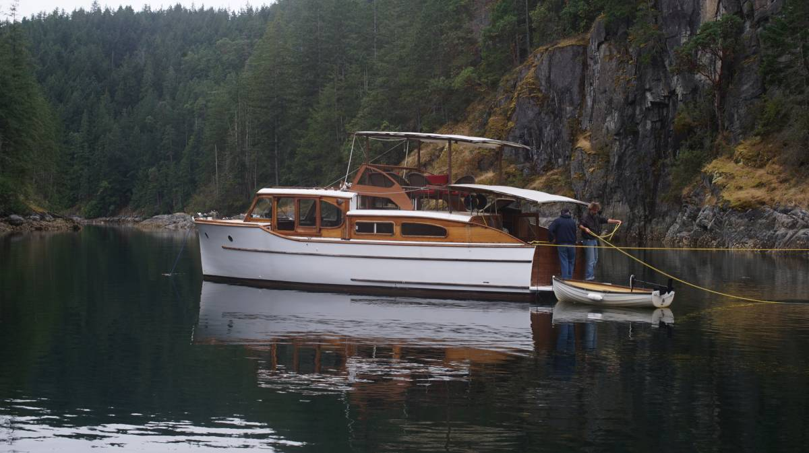

tenedos bay
Tenedos Bay
22.08.09
What we refer to on this page as Tenedos Bay is on the traditional, stolen, unceded land of the Klahoose and Tla’amin First Nations people.
After our long-stay in hathayim marine park, we returned to melanie cove for 11 days, only to discover what that cove was like during the apparently busiest week of the summer. Prideaux was filled with super yachts, floating mansions. Over in Melanie Cove, swinging freely was not an option. We stern-tied to a tree, with neighbors at our immediate left and right. I've never seen a bay so packed with boats. When boats stern-tied, the cove can fit over 40 boats (we counted). There was a concert happening on the weekend (we didn't know), next year, we'll be sure to arrive later. After that weekend the big boats cleared out, and the cove returned to a semi-quiet state.
We left on August 8th, went to Refuge Cove to re-supply on fresh veggies. We got some expensive (but delicious) corn, and sailed over to Tenedos Bay, a short ride away.
We left early in the morning, around 0600. This is the best time to be on the water. Desolation Sound is plagued with motor boat traffic, but there are fewer out there in the early mornings. They are big, fast, loud, smelly, and leave ridiculous wakes as they pass. Our ride was pleasant, especially since the sun had not yet had time to get too warm. The days are hot, hovering around 25-30°C.
The entrance marker for Tenedos is a huge bluff, it is tall and absolutely breathtaking. Some rocks lie in the entrance, if coming from north of Mink Island, but the tide was low enough that we could see most of them. The bay has many other rocks, scattered around, it is best to keep a lookout. One eye on the water, the other on the chart.
Tenedos is a huge bay, with many different spots to anchor and lots of little notches in the cliffs to tuck into. Because we enjoy sheltered locations, we aimed for a spot at the northwestern end of the bay. The bight is long and narrow, and because it is narrow stern-tying is necessary. We dropped the hook almost across the waterway, and backed to tie onto a tree. The tide wasn't too low then, and it wasn't too hard for Devine to clamber up the cliff to tie up. The next morning we saw how low the water can get, and how impossible it would be to tie at this spot in low water. The wall gets tall, and sharp, crusty sea things come into view, ready to cut holes in your feet and shoes.
The sea floor is rock. It seems to be broken up bits of rock, which ought to give the anchor something to grip onto. When the wind change, we can sometimes hear some scraping sounds... from the chain rubbing on rock. We had the same experience while in the South Pacific, with the chain hanging over reefs. Very different from grace harbour, which has a large rocky patch in the center that anchors will slide right over. Tenedos Bay is a deep water anchorage (300-600 feet in its centre) over all, but the water is shallower near land. We anchored in 37 feet (at high tide), but the water drops to 25 feet at low tide.
When the water is low, a spit of land dries up, cutting our little nook from 3 fathom cove to the south. When the water is high, people transit through by dinghy, kayak or paddleboard. There is a trail near the bit of drying land that leads to the top of a large cliff which overlooks the entire bay. We could see the top from our spot in the water, because the view point is marked by a Canadian flag. The bright red is hard to miss, all around is pale shades of green, and yellow.
The cliffside is full of arbutus trees, mosses and dry grasses. Arbutus trees love cliffs, and seem to thrive on little soil. Their trunks are a dull orange, rust color.
Devine climbed up the trail to the top of the cliff one afternoon, and snapped a few shots. It is a steep, arduous climb, but well worth the effort. Other kind visitors have installed ropes, to make it easier, and safer to climb. A group of determined people brought a bench up there, for others to enjoy.
 Someone, maybe the same people who left that bench, left a notebook and pen in a bottle atop the viewpoint for people to sign, and so we left our mark.
The water in this bay is wonderfully warm, and clear, clearer than anywhere else we've been so far. There are tons of seals and pups, we see at least a seal an hour swimming around the boat. The bay is populated by large shoals of fish, no longer than a hand. They are impressive. Sitting on the rock shelf at high tide while in the water, we saw this shoal swim by. The sun makes their silvery scales glimmer, like jewels. The group moves as one, compressed into a tight ball, a single mind with a single goal: evading predators. Some fish, we'd noticed, had bite marks. There is a war under Pino, life burns and fizzles right beneath our keel.
This little bay is very protected, but with a stern-tie, we take the wind on the side and that isn't always super comfortable (the running rigging doesn't like it, and rattles a whole lot to let us know it doesn't). With a hook in the water and a line to shore though, this is a very safe setup. The entire corner of the little 'island' in front of us is covered with boats that are stern-tied, boats with kids, with dogs, teenagers, families, couples, 60 year old kids too. Because this nook is small, it can only ever accomodate smaller boats, the larger yachts stay further away, and we are glad of it.
On our last 3 days in Tenedos, 3 boats carrying friends came to tie up in the bay. Rik & Kay on The Kid pulled up with Colleen and Rob on Lark. When Rik came to see us, we were on top of the large cliff and could see him rowing his inflatable. We shouted a loud hello, and that we'd be down in half an hour or so. When we arrived at water level, we found that yet other familiar faces had come into our little nook. Lloyd and Peter on MV Geordie were dropping anchor next to us. We waved hello, and Devine helped them stern-tie onto the same tree. The last time we'd seen them was on the Victoria Causeway docks. Peter had picked up LLoyd in Lund (where he'd left his van) and had come to cruise for a week together in Desolation.
Having friends in the bay was nice. During the day, we went on various hikes with The Kid and Lark. We rowed to the path leading to Lake Unwin, and had a lovely swim there. The lake water was clear, and warm. After swimming in salt water for weeks, it was a nice, welcome change. In evenings, we would hang out with Peter and Lloyd, exchanging stories.
We parted ways on August 14th. MV Geordie continued on to Refuge Cove, Lark & The Kid moved to Laura Cove, and we sailed south, to sturt bay.